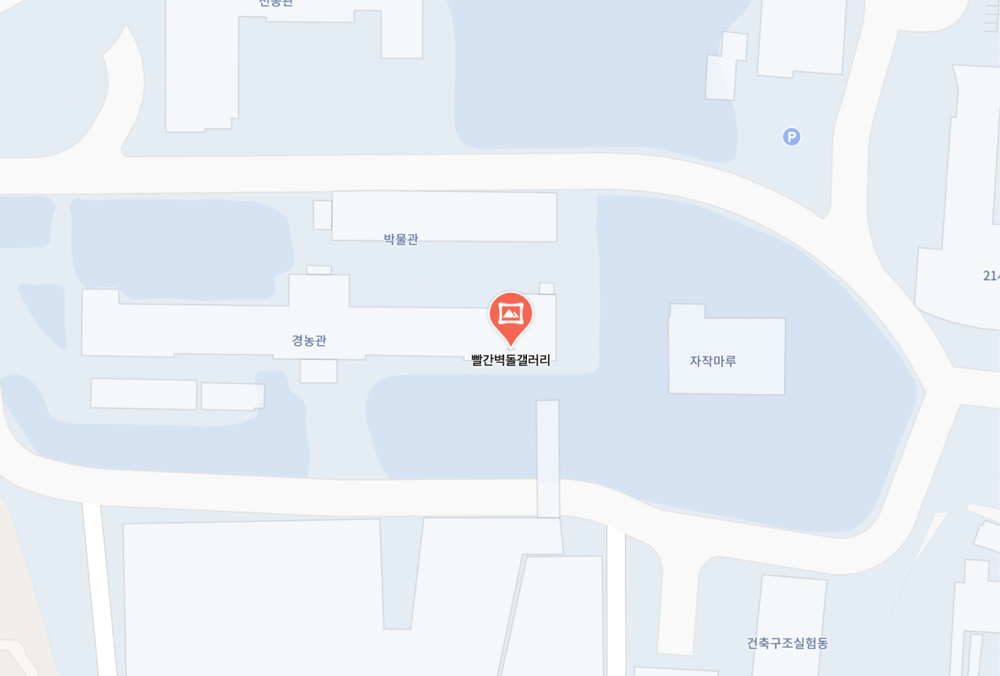

서울시립대학교 시각디자인
2024 졸업전시<열고>
2024 졸업전시<열고>
서울시립대학교 빨간벽돌갤러리
11월 22일 17시-20시
11월 23-26일 10시-20시
11월 27일 10시-14시
11월 22일 17시-20시
11월 23-26일 10시-20시
11월 27일 10시-14시
전시 《열고》는 문장을 끝내지 않은 열린 형태로, 미래의
가능성과 무한한 잠재력을 상징한다.
이번 전시를 통해 20명의 서울시립대학교 시각디자인전공 졸업생들이 모여 응집된 에너지를 발산하고,
각자의 작품을 통해 세상과 소통하는 다양한 시도를 보여준다.
뒤에 어떤 내용이 올지 모르는 미완의 문장처럼, 우리의 미래 또한 다양한 가능성으로 가득 차 있다.
문을 열고 나서 우리는 무엇을 마주하게 될까? 평탄한 길이 펼쳐질 수도, 험난한 길을 가로질러야 할 수도 있다.
그러나 무엇이 놓여 있든 앞으로 나아가기 위해서는 반드시 문을 열어야 한다.
이러한 도전의 순간을 통해 우리는 더 많은 것을 배우고, 스스로에 대해 깊이 이해하게 된다.
이번 졸업전시 《열고》에서는 학생들이 다양한 관점으로 공통 소재를 사유해낸 작업물들이 펼쳐진다.
이들의 발걸음이 어디로 향할지는 알 수 없지만,
이번 전시를 통해 다채로운 작품들을 만남으로써 자신만의 시각을 열고 닫을 수 있기를 기대해 본다.
이번 전시를 통해 20명의 서울시립대학교 시각디자인전공 졸업생들이 모여 응집된 에너지를 발산하고,
각자의 작품을 통해 세상과 소통하는 다양한 시도를 보여준다.
뒤에 어떤 내용이 올지 모르는 미완의 문장처럼, 우리의 미래 또한 다양한 가능성으로 가득 차 있다.
문을 열고 나서 우리는 무엇을 마주하게 될까? 평탄한 길이 펼쳐질 수도, 험난한 길을 가로질러야 할 수도 있다.
그러나 무엇이 놓여 있든 앞으로 나아가기 위해서는 반드시 문을 열어야 한다.
이러한 도전의 순간을 통해 우리는 더 많은 것을 배우고, 스스로에 대해 깊이 이해하게 된다.
이번 졸업전시 《열고》에서는 학생들이 다양한 관점으로 공통 소재를 사유해낸 작업물들이 펼쳐진다.
이들의 발걸음이 어디로 향할지는 알 수 없지만,
이번 전시를 통해 다채로운 작품들을 만남으로써 자신만의 시각을 열고 닫을 수 있기를 기대해 본다.
전시를 여는
사람들
사람들
위원장
총무
포토
웹
도록
홍보
워크샵
아이덴티티
지도교수
총무
포토
웹
도록
홍보
워크샵
아이덴티티
지도교수
류채은
이연우 윤수현
황보나현 홍은진
이덕원 고윤서 김유림 김조은 류채은
윤수현 김민정 박솔아 성슬기 송혜주 최혜민 홍은진
정세윤 이정호 이주희 하수민
류채은 정세윤 송혜주 최혜민 윤수현 이연우
하수민 김유림 김은지 류채은 송혜주 윤수현 최혜민
양민하 이재민 이푸로니 최성민
이연우 윤수현
황보나현 홍은진
이덕원 고윤서 김유림 김조은 류채은
윤수현 김민정 박솔아 성슬기 송혜주 최혜민 홍은진
정세윤 이정호 이주희 하수민
류채은 정세윤 송혜주 최혜민 윤수현 이연우
하수민 김유림 김은지 류채은 송혜주 윤수현 최혜민
양민하 이재민 이푸로니 최성민
빨간벽돌갤러리
오시는 길
오시는 길
서울특별시 동대문구 서울시립대로 163, 서울시립대로
빨간벽돌갤러리
